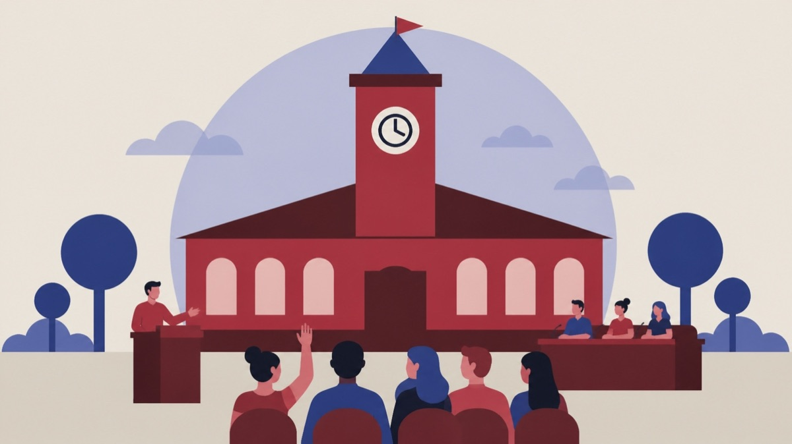

Besluttet 29. september, Økonomi- og Planudvalget, Ikast-Brande
Ændring af projektbeskrivelse for tekstilbog (D)

Kort fortalt
- Hvem
- Økonomi- og Planudvalget, Ikast-Brande Kommune
- Hvornår
- Tirsdag 29. september 2026
- Status
- Besluttet. Anbefales. Behandlingsforløb Økonomi- og Planudvalget 29. september 2026 Byrådet 5. oktober 2026.
Er noget forkert her? Skriv til os
Læs hele sagen Kommunens egen tekst
Indstilling
Kommunaldirektøren indstiller, at
ændringerne i projektet godkendes
de 150.000 kr. bevilget til projektet fra Byrådets anlægspulje, frigives.
Sagsfremstilling
I forbindelse med budget 2025 bevilgede Byrådet under anlægspuljen 150.000 kr. til udgivelse
af tekstilbogen "Textil250".
Den oprindelige projektbeskrivelse af tekstilbogen, som var udarbejdet af Hosebinderlauget,
omfattede en coffee table-bog om 250 udvalgte tekstilvirksomheder fra Hammerum Herred,
herunder deres udvikling og bidrag til tekstilindustrien samt personerne bag.
Museum Midtjylland har efterfølgende overtaget projektet og fremsendt en revideret
projektbeskrivelse. Projektet er her benævnt Den røde tråd og har et mere generelt fokus på
den midtjyske tekstilindustris historie, udvikling og entreprenørskab. Projektet beskriver
gennem historier om mennesker og virksomheder tekstilindustriens betydning for udviklingen i
Hammerum Herred.
Projektet omfatter tre dele:
1. Udgivelse af coffee table-bog ”Den røde tråd” om tekstilindustriens historie og
entreprenører.
2. Database og visuel formidling med gamle og nye optagelser af tekstilindustriens historie,
både til fremtidig dokumentation og forskning samt til formidling.
3. Udarbejdelse af undervisningsmateriel til elever fra 8. klasse til og med
ungdomsuddannelser.
I bogen belyses udviklingen gennem historier om mennesker eller virksomheder, som traf en
række valg, der fik en betydning for industriens udvikling i de nuværende Ikast-Brande eller
Herning kommuner. Der skal være plads til succeshistorierne, og der hvor det lykkedes, men
også de historier, hvor det gik galt. Bogen bliver rigt illustreret med historiske billeder.
I databasen lægges oplysninger om alle de tekstilvirksomheder, vi kender til i Hammerum
Herred. Databasen vil blive hostet hos Museum Midtjylland og løbende opdateret.
Fundamentet er allerede lagt i forbindelse med andre projekter, hvor tekstilvirksomhederne i
Hammerum Herred er lokaliseret. I databasen vil der løbende kunne blive tilføjet oplysninger til
forsknings- og formidlingsbrug. Sideløbende vil der blive søgt efter gamle filmklip hos bl.a.
Dansk Film Institut og danske lokalarkiver; disse tilføjes dels databasen, dels bruges de til
undervisning og formidling.
Desuden vil der blive optaget nye film med relevante tekstilvirksomheder, således at viden om
tekstilindustriens iværksættere, teknologiske udvikling og vilkår føres op til nutiden. Derved
gøres den historiske udvikling fra de omvandrende hosekræmmere med deres uldposer til
globale virksomheder med AI-teknologi vedkommende og relevant for et større publikum,
herunder de studerende, der er en del af projektets tredje og sidste del.
Tredje del af projektet handler om undervisning og forskning i entreprenørskab og
iværksætteri. Som et supplement til bogen planlægges en omskrevet version målrettet
ungdomsuddannelser med et tilhørende undervisningsmateriale med fokus på iværksætteri og
entreprenørskab for elever fra 8. klasse til og med ungdomsuddannelserne. Dette bliver
formentlig i en digital udgave, der løbende kan udvikles og opdateres.
’Den røde tråd’ forventes færdig i juni 2028 i forbindelse med den årlige Hosebinderdag.
Budgetmæssige konsekvenser
Ingen.
Beslutning
Anbefales.
Behandlingsforløb
Økonomi- og Planudvalget 29. september 2026
Byrådet 5. oktober 2026
Kilde: Ikast-Brande Kommune, Økonomi- og Planudvalget, referat fra mødet tirsdag 29. september 2026, punkt 3. Læs den originale sag hos kommunen.